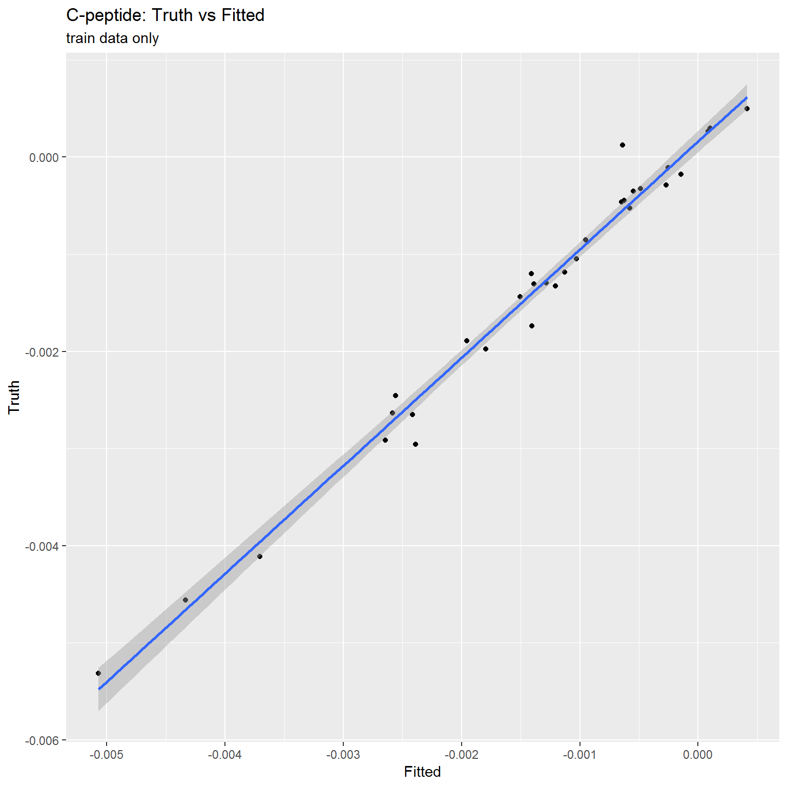
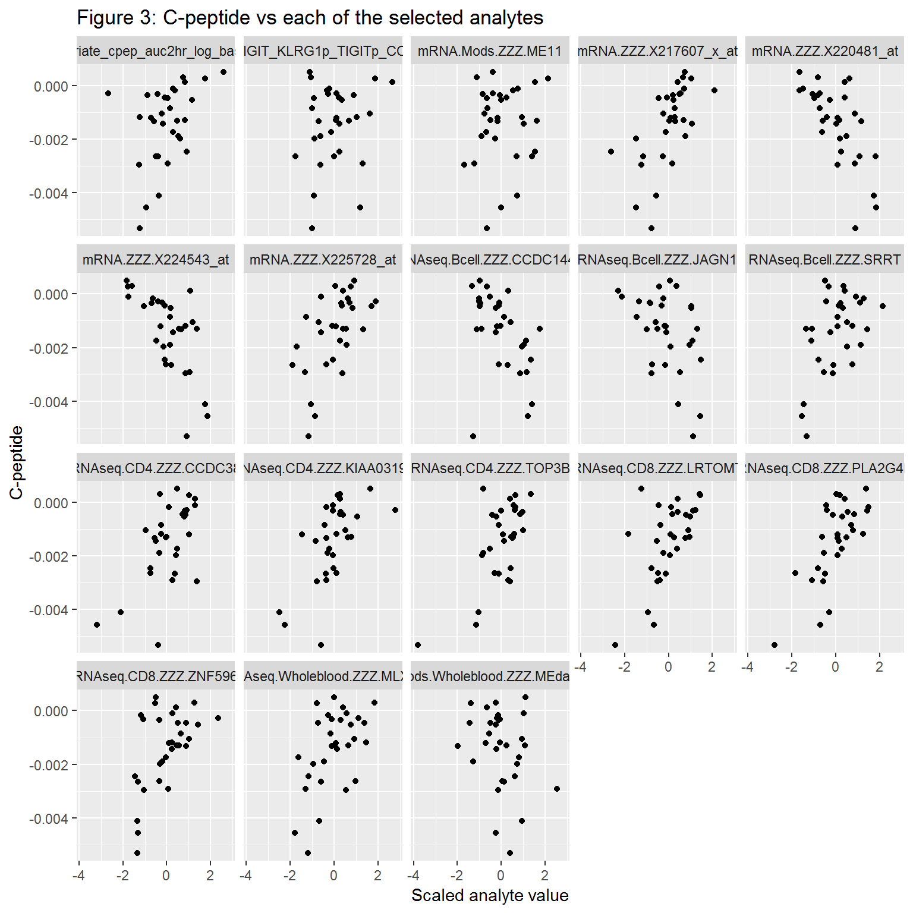
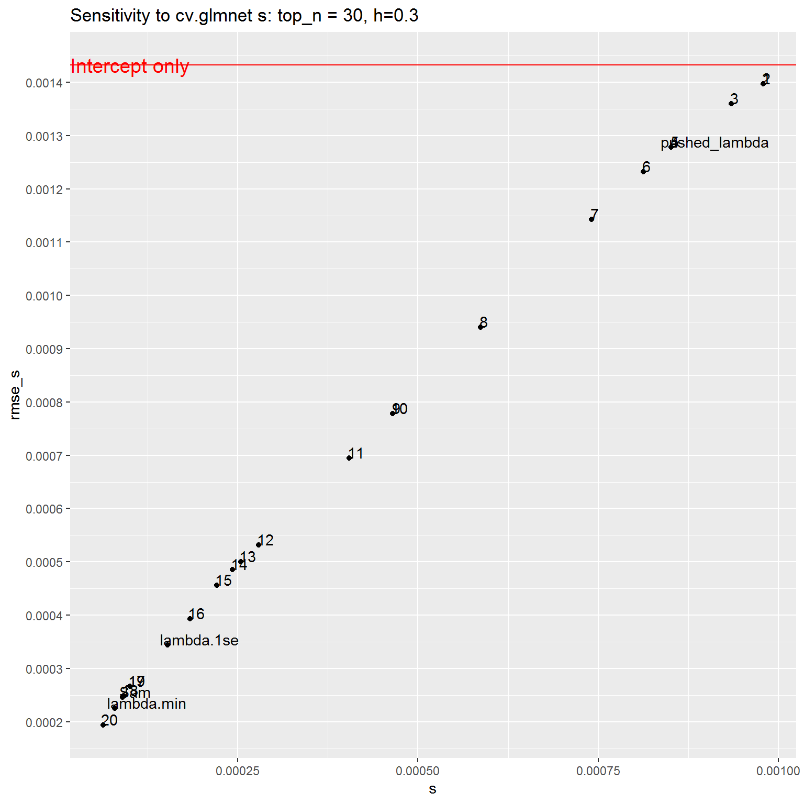

V_JDRF_1_selected_model.RmdRaw data Loading
Pre-processing
Model training
Model performance
Model diagnostics
## Supervised task: mlr.Data
## Type: regr
## Target: cpep_model_decayrate
## Observations: 31
## Features:
## numerics factors ordered functionals
## 76746 0 0 0
## Missings: TRUE
## Has weights: FALSE
## Has blocking: FALSE
## Has coordinates: FALSE## # A tibble: 10 x 2
## Gmt.name GMT.list
## <chr> <list>
## 1 BMT <list [346]>
## 2 c5-GO <list [1,454]>
## 3 c7-immunologic <list [4,872]>
## 4 h-Hallmark <list [50]>
## 5 B.affy <list [15]>
## 6 M.RNAseq.cell <list [9]>
## 7 M.RNAseq.CD4 <list [10]>
## 8 M.RNAseq.CD8 <list [17]>
## 9 M.RNAseq.Monocyte <list [8]>
## 10 M.RNAseq.Wholeblood <list [23]>lrn.glmnet.1.orig<-makeLearner(cl= "regr.cvglmnet", par.vals = list(alpha=1, s='lambda.min') ) # s will be override, so value does not matter. if not specified, mlr will assign s=0.01
# lrn.glmnet.1.orig$par.vals
# lrn.glmnet.1.orig$par.set
lrn_PreProcess_glmnet<-Fun_lrn_univ_Clusters_All_makePrep_MaG(lrn.glmnet.1.orig,
train_F = F_PreProc_3_UnivClust_Train_MaG, # pre-definced wrapper-function: train
Predict_F = F_PreProc13_BOTH_Predict_MaG, # pre-definced wrapper-function: predict
param.Univ.filt.top.n.features = NA,
param.UnivClustRankTopN = NA,
param.cluster_method_KH = NA,
param.corrplot.n.clusters.k = NA,
param.corrplot.n.clusters.h = NA,
parame.gene.or.module = NA,
param.LASSO.n.features.arbitrary=NA)
## params currently NOT in learner, since they are not tuned/benchmarked
Assay.Analyte.sep<-'.ZZZ.'
is.numeric(param.impute.knn.k<-20) ## [1] TRUEparam.assay.type.vec<-c('Short', 'Long', 'Short', 'Short', rep('Long', 11)) # to be automatically generated from MAE/SE_i@metadata
lrn_PreProcess_glmnet$par.vals[['param.assay.type.vec']]<-param.assay.type.vec
lrn_PreProcess_glmnet$next.learner$properties %<>% c(., 'missings') # ok to add only because pre-rprocessing will make sure all NAs are imputed
## arguments for the pre-processing wrapper
args_1<-list(
param.Univ.filt.top.n.features = 30,
param.UnivClustRankTopN = 1,
param.cluster_method_KH = 'method.h',
param.corrplot.n.clusters.k = 10,
param.corrplot.n.clusters.h = 0.3,
parame.gene.or.module = 'gene',
param.LASSO.n.features.arbitrary = 5)
lrn_1<-Func_update_args_univ_clusters(lrn = lrn_PreProcess_glmnet, args_vec = args_1, lrn.id = 'lrn1') Extracting the trained data set (after pre-processing), and other tuning parameters (alt_lambda).
if module-level data analysis is done, this will include the collapsed training dataset at the module level.
data_to_bake <-task_scaled %>% getTaskData()
target_to_bake<-task_scaled %>% getTaskTargetNames()
## bake UnivClust:
baked_UnivClust<-F_PreProc_3_UnivClust_Train_MaG(data_to_bake, target_to_bake, args = lrn_1$par.vals) # ok to do with F_PreProc_3_UnivClust_Train_MaG() since no further ML is done## Warning: Option grouped=FALSE enforced in cv.glmnet, since < 3 observations
## per foldtask_baked_UnivClust<-makeRegrTask(id = "baked_passed_univ", data = baked_UnivClust$data, target = "cpep_model_decayrate")
## 201 features have remained
task_baked_UnivClust## Supervised task: baked_passed_univ
## Type: regr
## Target: cpep_model_decayrate
## Observations: 31
## Features:
## numerics factors ordered functionals
## 201 0 0 0
## Missings: FALSE
## Has weights: FALSE
## Has blocking: FALSE
## Has coordinates: FALSEBaked_x<-baked_UnivClust$data %>% select(-cpep_model_decayrate) %>% as.matrix
Baked_y<-baked_UnivClust$data %>% pull(cpep_model_decayrate)
# predict(model_3_glmnet, Baked_x, s=Model_UnivClust$learner.model$control$alt_lambda) %>% data.frame %>% pull(X1)
fit_baked<-cv.glmnet(Baked_x, Baked_y, alpha = 1)
# fit_baked %>% tidy
# plot(fit_baked)
# coef(fit_baked) include range of lambda values
coef(fit_baked, s = 0.00009) %>% tidy # 19 withOUT OSBP2. paper## Warning: 'tidy.dgCMatrix' is deprecated.
## See help("Deprecated")## Warning: 'tidy.dgTMatrix' is deprecated.
## See help("Deprecated")## row column value
## 1 (Intercept) 1 -1.415488e-03
## 2 FACS.ZZZ.MFI_TIGIT_KLRG1p_TIGITp_CCR7n_Naive_CD8 1 1.482111e-05
## 3 mRNA.ZZZ.X220481_at 1 -5.172735e-05
## 4 mRNA.ZZZ.X217607_x_at 1 1.051110e-04
## 5 mRNA.ZZZ.X225728_at 1 7.801345e-05
## 6 mRNA.ZZZ.X224543_at 1 -3.684326e-04
## 7 RNAseq.Bcell.ZZZ.CCDC144A 1 -1.730506e-06
## 8 RNAseq.Bcell.ZZZ.JAGN1 1 -1.416425e-04
## 9 RNAseq.Bcell.ZZZ.SRRT 1 2.696179e-05
## 10 RNAseq.CD4.ZZZ.TOP3B 1 1.745456e-04
## 11 RNAseq.CD4.ZZZ.KIAA0319L 1 1.299520e-04
## 12 RNAseq.CD4.ZZZ.CCDC38 1 8.078189e-05
## 13 RNAseq.CD8.ZZZ.PLA2G4B 1 4.787649e-04
## 14 RNAseq.CD8.ZZZ.ZNF596 1 2.044533e-04
## 15 RNAseq.CD8.ZZZ.LRTOMT 1 8.972554e-05
## 16 RNAseq.Wholeblood.ZZZ.MLXIP 1 6.503904e-05
## 17 mRNA.Mods.ZZZ.ME11 1 1.448408e-05
## 18 RNAseqMods.Wholeblood.ZZZ.MEdarkturquoise 1 -1.438494e-05
## 19 Covariate_cpep_auc2hr_log_baseline 1 1.629322e-04response_direct_glmnet_baked<-predict(fit_baked, Baked_x, s = fit_baked$lambda.min) %>% data.frame %>% pull(X1)
## with 100% train, self-predict, OK to use Baked_x since we know for sure it will include final LASSO coel that were selected from it. However, this will NOT be the case for resampling/CV# set.seed(1)
Model_UnivClust<-train(lrn_1, task_scaled) ## lrn will have defaults s, that is used to extract/predict specific coef, though all s values are used for calculation## Warning: Option grouped=FALSE enforced in cv.glmnet, since < 3 observations
## per fold# Model_UnivClust$learner$next.learner$par.vals$s # default s is unchanged, unless updated directly as below
train_glmnet_fit<-Model_UnivClust$learner.model$next.model$learner.model
# coef(train_glmnet_fit) %>% tidy # If s is not specified, will always use lambda.1se. this is NOT affected by the learner's par.vals
# coef(train_glmnet_fit, s = train_glmnet_fit$lambda.1se) %>% tidy
coef_table<-coef(train_glmnet_fit, s = train_glmnet_fit$lambda.min) %>% tidy # s = 0.00009## Warning: 'tidy.dgCMatrix' is deprecated.
## See help("Deprecated")## Warning: 'tidy.dgTMatrix' is deprecated.
## See help("Deprecated")## row column value
## 1 (Intercept) 1 -1.415635e-03
## 2 FACS.ZZZ.MFI_TIGIT_KLRG1p_TIGITp_CCR7n_Naive_CD8 1 1.875542e-05
## 3 mRNA.ZZZ.X220481_at 1 -5.561646e-05
## 4 mRNA.ZZZ.X217607_x_at 1 1.039372e-04
## 5 mRNA.ZZZ.X225728_at 1 7.723215e-05
## 6 mRNA.ZZZ.X224543_at 1 -3.685272e-04
## 7 RNAseq.Bcell.ZZZ.CCDC144A 1 -2.333866e-06
## 8 RNAseq.Bcell.ZZZ.JAGN1 1 -1.439367e-04
## 9 RNAseq.Bcell.ZZZ.SRRT 1 2.806651e-05
## 10 RNAseq.CD4.ZZZ.TOP3B 1 1.729028e-04
## 11 RNAseq.CD4.ZZZ.KIAA0319L 1 1.298560e-04
## 12 RNAseq.CD4.ZZZ.CCDC38 1 7.970259e-05
## 13 RNAseq.CD8.ZZZ.PLA2G4B 1 4.774177e-04
## 14 RNAseq.CD8.ZZZ.ZNF596 1 2.058385e-04
## 15 RNAseq.CD8.ZZZ.LRTOMT 1 9.058397e-05
## 16 RNAseq.Wholeblood.ZZZ.MLXIP 1 6.583024e-05
## 17 mRNA.Mods.ZZZ.ME11 1 1.594887e-05
## 18 RNAseqMods.Wholeblood.ZZZ.MEdarkturquoise 1 -1.722168e-05
## 19 Covariate_cpep_auc2hr_log_baseline 1 1.660267e-04# Predict:
# mlr::predict take by default the initial s, so must be updated internally from model()$control
Model_UnivClust$learner$next.learner$par.vals$s # this is the intial s, arbitrarily defined in the original glmnet learner## [1] "lambda.min"# Model_UnivClust_my_s<-Model_UnivClust # make a copy, not to over-ride
# Model_UnivClust_my_s$learner$next.learner$par.vals$s<-0.00009
# Model_UnivClust_my_s$learner.model$control$alt_lambda$lambda.min
mlr_predict<-predict(Model_UnivClust, task_baked_UnivClust) # unlike the above coef(), the mlr::predict will be affected by the learner's par.vals. here, it will take the lambda.min, rather than the default lambda.1se
response_direct_glmnet_train<-mlr_predict$data$response## [1] TRUErmse_direct<-sqrt(mean((response_direct_glmnet_train - Baked_y) ^ 2)) # identical, so doesn't matter which one to use
rmse_direct## [1] 0.0002402502## featureless / intercept only
y<-task_scaled %>% getTaskTargets
y_mean<-y %>% mean
rmse_null<-sqrt(mean((y - y_mean) ^ 2))
# model_intercept_only<-train(makeLearner(cl='regr.featureless'), task_scaled)
# model_intercept_only$learner.model
# pred_featureless<-predict(model_intercept_only, task_baked_UnivClust)
# performance(pred_featureless, rmse)## C-peptide: Truth vs Fitted:
# plot(x = response_direct_glmnet_train, y = Baked_y)
DF_fitted_trutch<-data.frame(Fitted = response_direct_glmnet_train, Truth = Baked_y)
ggplot(DF_fitted_trutch, aes(x = Fitted, y = Truth)) + geom_point() + geom_smooth(method = 'lm') +
labs(title = 'C-peptide: Truth vs Fitted', subtitle = 'train data only')
## Each analyte vs original y
task_coef_glmnet<-task_baked_UnivClust %>% subsetTask(features = coef_table$row[-1])# imputed
DF_wide<-task_coef_glmnet %>% getTaskData()
DF_long<-DF_wide %>% gather('Analyte', 'value', -cpep_model_decayrate)
# DF_long %>% head
ggplot(DF_long, aes(x=value, y=cpep_model_decayrate)) +
geom_point() + facet_wrap(~Analyte) +
#geom_smooth(method = 'lm') +
xlab('Scaled analyte value') + ylab('C-peptide') +
labs(title = 'Figure 3: C-peptide vs each of the selected analytes')
## We choose to more carefully select (tune) the optimal value for lambda, so predicion has to be manually, rather than straight forward using mlr::predict() function
# Model_UnivClust$learner.model$control$alt_lambda
# alt_lambda is by default cv.glmnet$lambda.min, or, if the above caused null model, a revised, "pushed" lambda
fit_baked_cv<-cv.glmnet(Baked_x, Baked_y, alpha = 1, nfolds = Baked_x %>% nrow)
# fit_baked_cv$lambda.min
# fit_baked_cv$lambda.1se
bmr_s_tib_cv<-data.frame(param = c(1:20)) %>% as_tibble %>%
mutate(s = param %>% map(~cvglmnet_alternative_lambda.min_function(fit_baked_cv, .x) ) %>% map('pushed_lambda') %>% unlist)
bmr_s_tib_ind<-baked_UnivClust$control$alt_lambda %>% data.frame %>% t %>% data.frame %>%
rownames_to_column %>% set_colnames(c('param', 's')) %>% as_data_frame() %>%
add_row(param = 'Sam', s = 0.00009)
bmr_s_tib<-rbind(bmr_s_tib_ind, bmr_s_tib_cv)
bmr_s_tib %<>%
mutate(coef_s = s %>% map(~coef(fit_baked, s = .x) %>% tidy)) %>%
mutate(n_coef = coef_s %>% map_int(~nrow(.x))) %>%
mutate(predict_s = s %>% map(~predict(fit_baked, Baked_x, s = .x) %>% data.frame %>% pull(X1) )) %>%
mutate(rmse_s = predict_s %>% map_dbl(~sqrt(mean((.x - Baked_y) ^ 2))))
# coef(fit_baked, s = baked_UnivClust$control$alt_lambda$lambda.min) %>% tidy # 0.0001001846 # 20 with OSBP2
# coef(fit_baked, s = baked_UnivClust$control$alt_lambda$lambda.1se) %>% tidy # 16
# coef(fit_baked, s = baked_UnivClust$control$alt_lambda$pushed_lambda) %>% tidy #
ggplot(bmr_s_tib, aes(x = s, y = rmse_s, label = param)) +
geom_point() +
geom_text(hjust=0.1, vjust=0) +
ggtitle('Sensitivity to cv.glmnet s: top_n = 30, h=0.3') +
geom_hline(yintercept = rmse_null, colour = "red") +
scale_y_continuous(breaks = pretty(bmr_s_tib$rmse_s, n = 10)) +
annotate("text", label = "Intercept only", x = 0.0001, y = rmse_null, size = 5, colour = "red")
## R version 3.5.0 (2018-04-23)
## Platform: x86_64-w64-mingw32/x64 (64-bit)
## Running under: Windows 10 x64 (build 14393)
##
## Matrix products: default
##
## locale:
## [1] LC_COLLATE=English_United States.1252
## [2] LC_CTYPE=English_United States.1252
## [3] LC_MONETARY=English_United States.1252
## [4] LC_NUMERIC=C
## [5] LC_TIME=English_United States.1252
##
## attached base packages:
## [1] stats graphics grDevices utils datasets methods base
##
## other attached packages:
## [1] bindrcpp_0.2.2 JDRFCAV_0.1.0 impute_1.54.0
## [4] limma_3.36.1 biobroom_1.12.0 broom_0.5.0
## [7] glmnet_2.0-16 foreach_1.4.4 Matrix_1.2-14
## [10] mlrCPO_0.3.4 mlr_2.13.9000 ParamHelpers_1.12
## [13] ggplot2_3.1.0 tibble_2.0.1 tidyr_0.8.2
## [16] stringr_1.3.1 purrr_0.2.5 magrittr_1.5
## [19] dplyr_0.7.8
##
## loaded via a namespace (and not attached):
## [1] Rcpp_1.0.0 lattice_0.20-35 assertthat_0.2.0
## [4] rprojroot_1.3-2 digest_0.6.18 utf8_1.1.4
## [7] R6_2.3.0 plyr_1.8.4 backports_1.1.3
## [10] evaluate_0.12 pillar_1.3.1 rlang_0.3.1
## [13] lazyeval_0.2.1 rstudioapi_0.7 data.table_1.12.0
## [16] checkmate_1.9.1 rmarkdown_1.11 pkgdown_1.3.0
## [19] labeling_0.3 desc_1.2.0 splines_3.5.0
## [22] munsell_0.5.0 compiler_3.5.0 xfun_0.4
## [25] pkgconfig_2.0.2 BiocGenerics_0.26.0 BBmisc_1.11
## [28] htmltools_0.3.6 tidyselect_0.2.5 roxygen2_6.1.1
## [31] codetools_0.2-15 XML_3.98-1.16 fansi_0.4.0
## [34] crayon_1.3.4 withr_2.1.2 MASS_7.3-49
## [37] commonmark_1.5 grid_3.5.0 nlme_3.1-137
## [40] gtable_0.2.0 scales_1.0.0 cli_1.0.1
## [43] stringi_1.2.4 fs_1.2.3 parallelMap_1.4
## [46] xml2_1.2.0 fastmatch_1.1-0 iterators_1.0.10
## [49] tools_3.5.0 Biobase_2.40.0 glue_1.3.0
## [52] parallel_3.5.0 survival_2.41-3 yaml_2.2.0
## [55] colorspace_1.4-0 memoise_1.1.0 knitr_1.21
## [58] bindr_0.1.1